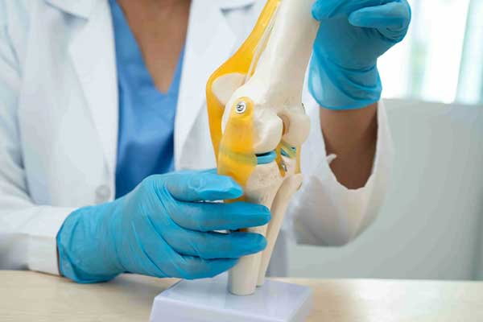
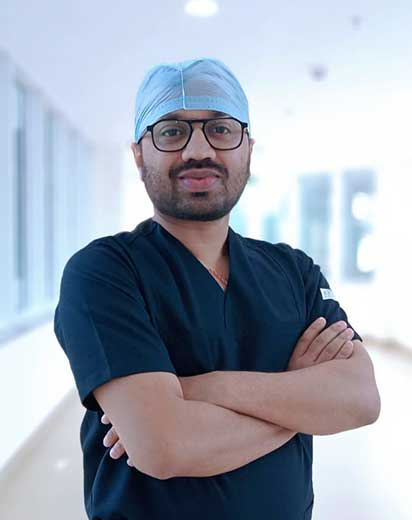
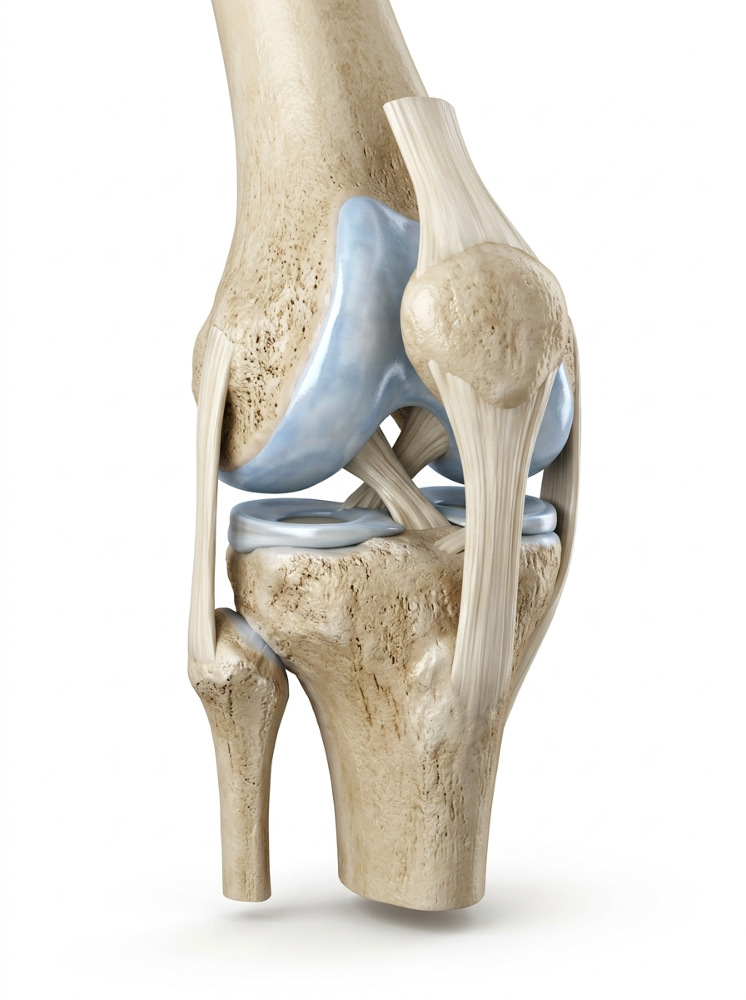

Joint Replacement Surgery
Advanced robotic-assisted knee and hip replacement procedures designed for precision, comfort and improved everyday mobility.
Read MoreMenu
Mon – Sat: 9:00 AM – 11:30 PM
JD Nagar, Makarpura, Vadodara – 390013
Focused on helping patients improve mobility, relieve pain, and live healthier lives through advanced surgical precision and compassionate guidance.
15+ years of surgical excellence in advanced knee, joint and bone care.
Compassionate, personalized treatment tailored to your daily mobility needs.
AI & robotic precision knee replacements with minimally invasive keyhole techniques.
Step-by-step physiotherapy protocols and continuous doctor follow-ups.

Welcome to the practice of Dr. Ashish Kumar Goyal. We are committed to providing patient-focused orthopaedic care with an emphasis on mobility, comfort and quality of life.
From knee and sports injuries to advanced orthopaedic procedures, our approach focuses on understanding each patient's condition and providing appropriate treatment guidance. Every patient deserves personalised attention and care throughout their treatment journey.
Care planned around individual needs.
Support for joint, knee and sports injuries.
Understanding your condition and treatment options.
Helping patients work towards improved movement.
Advanced orthopaedic treatments designed to relieve pain, restore mobility and help you return to an active, healthy lifestyle.

Advanced robotic-assisted knee and hip replacement procedures designed for precision, comfort and improved everyday mobility.
Read More
Specialised treatment for complex fractures, failed implants, bone infections and revision surgeries, planned carefully around each patient's condition.
Read More
Expert care for foot deformities, ankle injuries, fractures and other conditions that affect walking and everyday movement.
Read More
Minimally invasive treatment for ligament tears, meniscus injuries and joint-related sports injuries, helping active patients work towards recovery.
Read More
Specialised evaluation and surgical care for bone and soft tissue tumours, with a strong focus on limb preservation.
Read More
Advanced treatment options including PRP and other regenerative therapies to support joint and tissue care, based on your condition.
Read MoreDelivering excellence in robotic joint replacement, arthroscopy, and sports trauma through surgical expertise, cutting-edge technology, and compassionate patient care.
Advanced technology for greater accuracy and better outcomes.
Minimally invasive techniques that help you return to daily life sooner.
Specialised care for sports injuries, including ACL and meniscus treatment.

Class 100 modular OT with advanced safety protocols.
Guidance from diagnosis to recovery, tailored to your needs.
Structured physiotherapy and follow-ups for long-lasting results.
Hear from patients who overcame debilitating joint pain and ligament injuries through Dr. Ashish Kumar Goyal's specialized surgical care.
Schedule your consultation with Dr. Ashish Kumar Goyal for expert orthopaedic care and advanced treatment.
Personalised care and treatment guidance.
Choose your preferred consultation date.
JD Nagar, Makarpura, Vadodara, Gujarat.
Fill in your details and we will continue on WhatsApp to confirm your slot.
Find answers to common questions about robotic joint surgery, ACL reconstruction, recovery periods, and insurance coverage.
Expert articles and practical advice to help you understand joint conditions, injury rehabilitation, and modern surgical solutions.
Understand how sub-millimeter robotic precision minimizes muscle damage, protects ligaments, and enables rapid return to active mobility.
Read Full Article
Sports Medicine
A step-by-step roadmap for active individuals dealing with ligament tears, from initial MRI diagnosis to full sports return.
Read Full Article
Knee Wellness
Simple, low-impact physiotherapy movements recommended by orthopaedic specialists to maintain joint flexibility and reduce pain.
Read Full Article